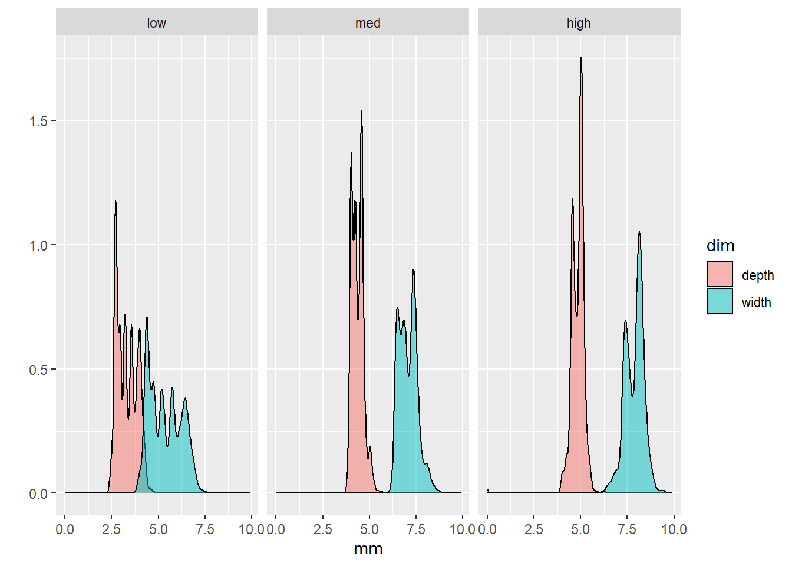
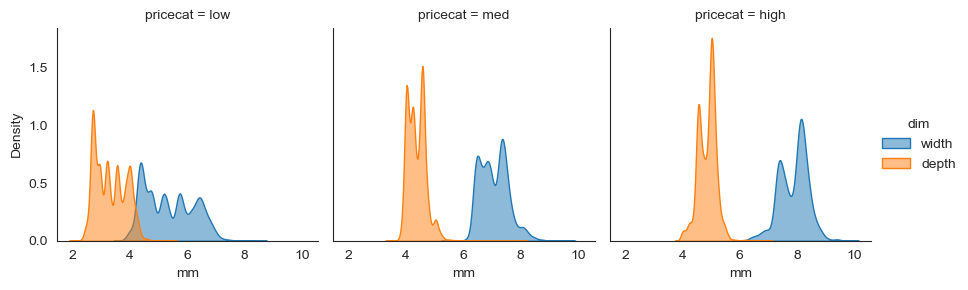
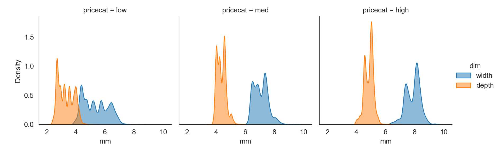
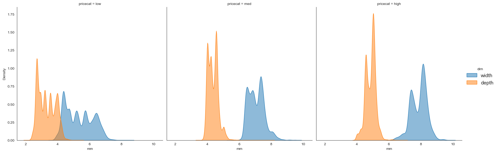
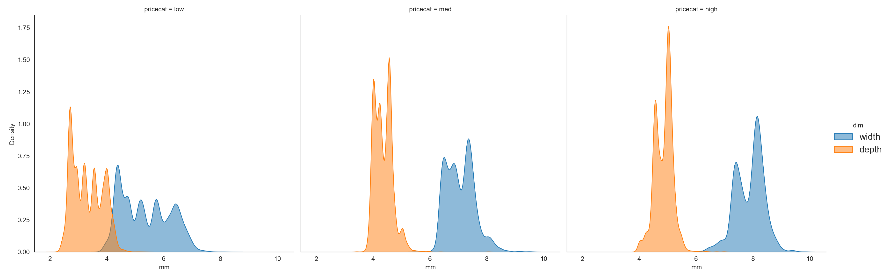
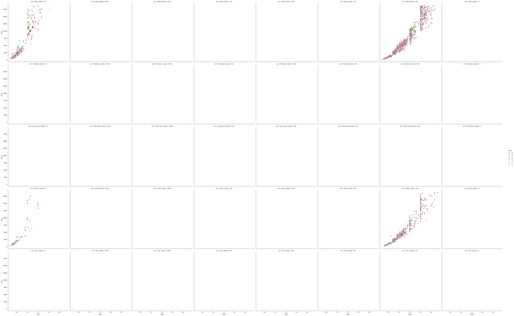
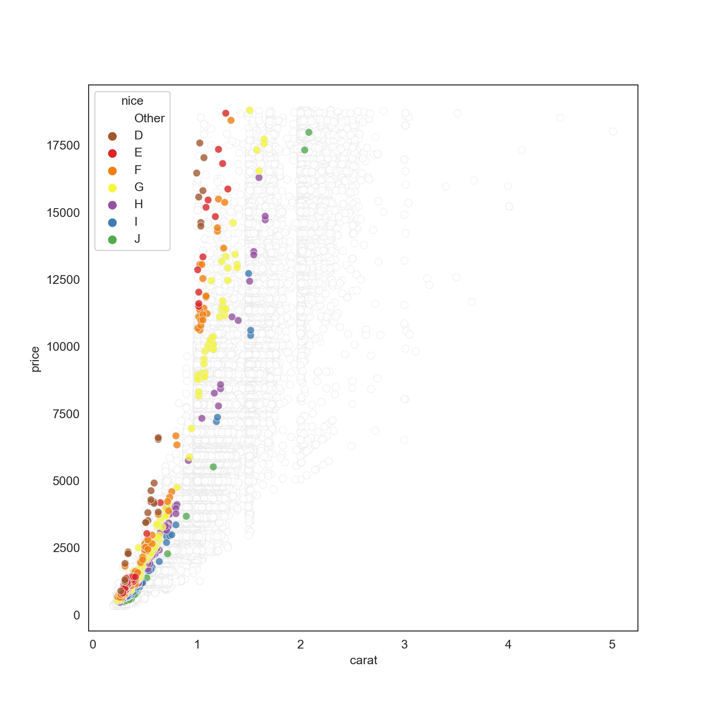

library(tidyverse)
library(reticulate)
# Cofigure corrent Conda env
# use_condaenv(
# condaenv = 'rToPython'
# )Steven Morse tutorial
LOAD PACKAGES / LIBRARIES
R
Python
import numpy as np
import pandas as pd
import matplotlib.pyplot as plt
import seaborn as snsConfigure Python libraries
sns.set_style('white')LOAD DATA
df = sns.load_dataset('diamonds')
df.head() carat cut color clarity depth table price x y z
0 0.23 Ideal E SI2 61.5 55.0 326 3.95 3.98 2.43
1 0.21 Premium E SI1 59.8 61.0 326 3.89 3.84 2.31
2 0.23 Good E VS1 56.9 65.0 327 4.05 4.07 2.31
3 0.29 Premium I VS2 62.4 58.0 334 4.20 4.23 2.63
4 0.31 Good J SI2 63.3 58.0 335 4.34 4.35 2.75TUTORIAL
Piping and filtering
py$df %>%
select(carat, color) %>%
filter(color == 'E') %>%
head(3) carat color
1 0.23 E
2 0.21 E
3 0.23 E(df
.filter(['carat', 'color'])
.query('color == "E"')
.head(3)
) carat color
0 0.23 E
1 0.21 E
2 0.23 ESummarization
py$df %>%
select(starts_with('c')) %>%
filter(cut %in% c('Ideal', 'Premium')) %>%
group_by(cut, color, clarity) %>%
summarise(
avgcarat = mean(carat, na.rm = T),
n = n()
) %>%
arrange(desc(avgcarat)) %>%
head()`summarise()` has grouped output by 'cut', 'color'. You can override using the
`.groups` argument.# A tibble: 6 × 5
# Groups: cut, color [4]
cut color clarity avgcarat n
<fct> <fct> <fct> <dbl> <int>
1 Ideal J I1 1.99 2
2 Premium I I1 1.61 24
3 Premium J I1 1.58 13
4 Premium J SI2 1.55 161
5 Ideal H I1 1.48 38
6 Premium I SI2 1.42 312dfSum = (df
.filter(regex='^c')
.query('cut in ["Ideal", "Premium"]')
.groupby(['cut', 'color', 'clarity'])
.agg(['mean', 'size'])
.sort_values(by=('carat', 'mean'), ascending=False)
.head()
)
dfSum.head() carat
mean size
cut color clarity
Ideal J I1 1.990000 2
Premium I I1 1.605833 24
J I1 1.578462 13
SI2 1.554534 161
Ideal H I1 1.475526 38Pivoting and plotting
py$df %>%
select(x, y, z) %>%
gather(key = dim, value = mm) %>%
head() dim mm
1 x 3.95
2 x 3.89
3 x 4.05
4 x 4.20
5 x 4.34
6 x 3.94py$df %>%
mutate(
price.cat =
cut(price,
breaks = 3,
labels = c('low', 'med', 'high')
)
) %>%
select(price.cat, width = x, depth = z) %>%
pivot_longer(
cols = c(width, depth),
names_to = 'dim',
values_to = 'mm'
) %>%
filter(mm < 10) %>%
ggplot(aes(x = mm, fill = dim)) +
geom_density(alpha = 0.5) +
facet_wrap(~price.cat) +
ylab('')
# Vanilla sns plot
dfPlot = (df
.assign(pricecat = pd.cut(df['price'], bins=3, labels=['low', 'med', 'high']))
.filter(['x', 'z', 'pricecat'])
.rename(columns={'x': 'width', 'z':'depth'})
.melt(id_vars=['pricecat'], value_vars=['width', 'depth'],
var_name='dim', value_name='mm')
.query('2 < mm < 10')
)
g = sns.FacetGrid(data = dfPlot, col='pricecat', hue='dim')
g.map(sns.kdeplot, 'mm', shade=True, alpha=0.5).add_legend()
plt.show()
(df
.assign(pricecat = pd.cut(df['price'], bins=3, labels=['low', 'med', 'high']))
.filter(['x', 'z', 'pricecat'])
.rename(columns={'x': 'width', 'z':'depth'})
.melt(id_vars=['pricecat'], value_vars=['width', 'depth'],
var_name='dim', value_name='mm')
.query('2 < mm < 10')
.pipe((sns.FacetGrid, 'data'),
col='pricecat', hue='dim', height=6)
.map(sns.kdeplot, 'mm', shade=True, alpha=0.5)
.add_legend(fontsize=14)
)
plt.show()
(df
.query('cut in ["Ideal", "Good"] & \
clarity in ["IF", "SI2"] & \
carat < 3')
.pipe((sns.FacetGrid, 'data'),
row='cut', col='clarity', hue='color',
hue_order=list('DEFGHIJ'),
height=6,
legend_out=True)
.map(sns.scatterplot, 'carat', 'price', alpha=0.8)
.add_legend()
)
plt.show()
Advance matplotlib options
fig, ax = plt.subplots(1,1, figsize=(8,8))
pal = dict(zip(df['color'].unique(), sns.color_palette('Set1', desat=.9)))
pal['Other'] = (1,1,1)
(df
.assign(nice = np.where((df['cut']=='Ideal') & (df['clarity']=='IF'), df['color'], 'Other'))
.sort_values(by='nice', ascending=False)
.pipe((sns.scatterplot, 'data'),
x='carat', y='price',
hue='nice', hue_order=np.append('Other', list('DEFGHIJ')),
palette=pal,
alpha=0.8,
edgecolor=(0.92,0.92,0.92),
ax=ax)
)
plt.show()